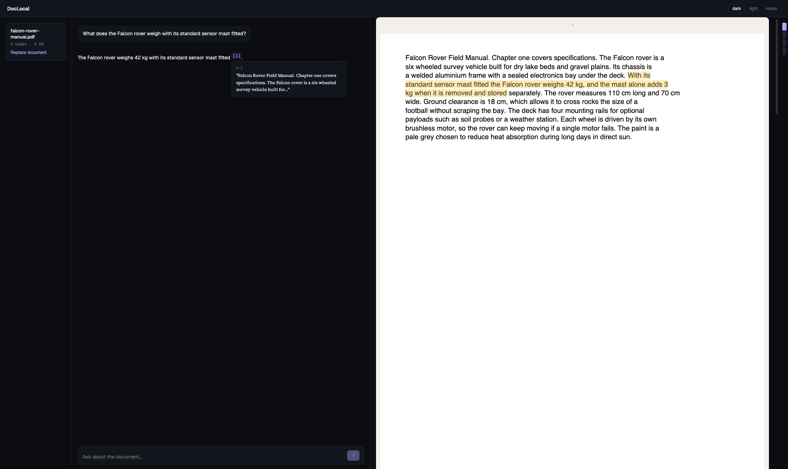

UI demo · mock-backed replayDocLocal
PDF question-answering with retrieval-augmented generation (RAG): the passages most relevant to each question are retrieved from the document and sent to the model with it. Every answer cites its source — click a citation to jump to the highlighted passage in the PDF and check it yourself.
The live prototype runs entirely in the browser: Angular 21 and Nx, Transformers.js embeddings in a Web Worker, and WebLLM inference on WebGPU, with a SharedWorker so every open tab shares one model. In development: a Python/FastAPI backend on NVIDIA NIM cloud models — no model download or local GPU — with streamed answers, mid-stream cancellation, and session recovery. That path sends document text and questions to NVIDIA.